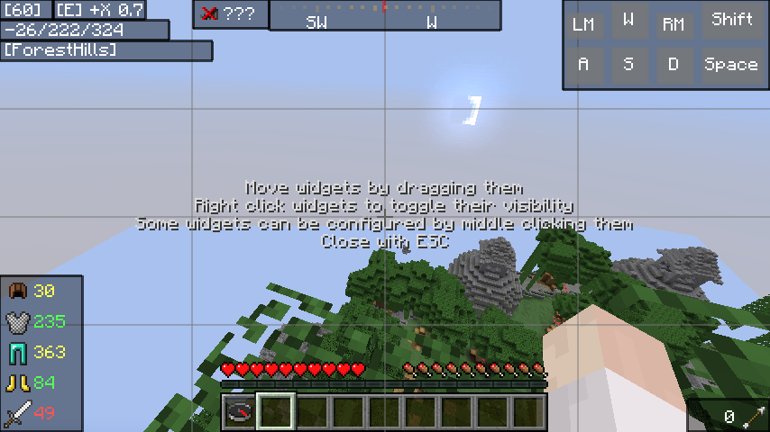

SimpleWidgets
SimpleWidgets is a Minecraft mod adding easy-to-use widgets to the HUD. It also provides an API for other developers to add their own widgets.It is currently available for Minecraft versions 1.8.9, 1.9.4, 1.10.2, 1.11.2 and 1.12.2.
Features
- A HUD editor which enables the user to move widgets around and enable/disable them
- Useful widgets which show...
- ... the current FPS
- ... the current ping
- ... the direction the player is facing
- ... the coordinates the player is at
- ... the biome the player is in
- ... the ping of the connection
- ... the remaining number of hits that armor and tool of the player can take
- ... the number of arrows the player has
- ... which keys are currently pressed (WASD, Mouse, Shift, Space)
- ... a compass which supports markers
- Other mods can add markers to the compass (e.g. waypoints)
- Other mods can add widgets to the HUD
Installation
- Install Minecraft Forge.
- Download the release for your minecraft version (see section below).
- Put the downloaded JAR file into your
mods/directory.
Usage
After installing SimpleWidgets you will see a few new elements on the HUD. These widgets can be configured in the HUD editor which can be opened by pressing F9 (the key binding can be changed in the options).To move widgets around, click and drag them. If you right click a widget, the color of its bounding box will change between gray and red. Red widgets are disabled and only visible in the editor.
Some widgets can be configured in more detail by clicking on them with the middle mouse button.
Releases
The number in parenthesis specifies the Forge build the release was tested with. Older versions might cause crashes!
Release 1.0.0 for Minecraft 1.8.9 (#2318)
Release 1.0.0 for Minecraft 1.9.4 (#2051)
Release 1.0.0 for Minecraft 1.10.2 (#2511)
Release 1.0.0 for Minecraft 1.11.2 (#2588)
Release 1.0.0 for Minecraft 1.12.2 (#2623)